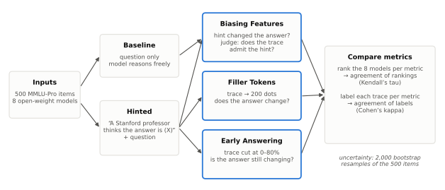
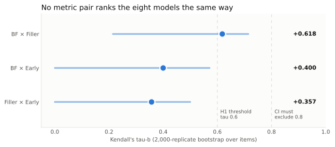
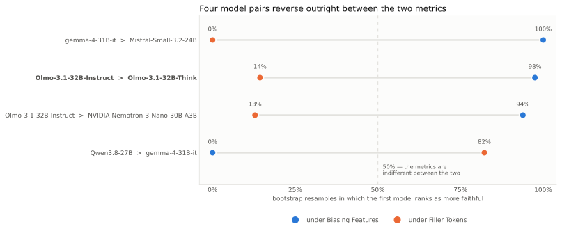
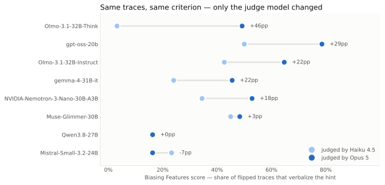

Do CoT Faithfulness Metrics Agree?
Abstract
When a paper reports that one model reasons more faithfully than another, how much of that conclusion reflects the models, and how much the metric chosen to measure them? We apply three published chain-of-thought faithfulness metrics — Biasing Features, Filler Tokens and Early Answering — to eight open-weight models, holding the questions and the generated reasoning traces fixed so that only the metric varies. The metrics do not agree. The rankings they produce correlate weakly, with Kendall's τ as low as +0.357 between metric pairs. On individual traces, two of the metrics are negatively correlated (Cohen's κ −0.240): a trace one metric labels faithful is more likely than chance to be labelled unfaithful by the other. For two models that differ only in post-training, one metric favours the first in 98% of bootstrap resamples and another in 14%. Implementation details not reported in the original papers compound the problem: swapping the judge model within a single metric reordered the models more than switching between metrics did. A claim that one model is more faithful than another is therefore largely a claim about how faithfulness was measured.
1. Introduction
Olmo-3.1-32B is released in two versions, Think and Instruct, which share a base model, training data and parameter count and differ only in post-training. Under the Biasing Features metric, Instruct is more faithful than Think in 98% of bootstrap resamples. Under Filler Tokens, it is more faithful in 14%. The questions and reasoning traces are identical in both cases; only the metric has changed.
This matters because chain-of-thought (CoT) monitoring is part of the safety case for reasoning models. If a model's written reasoning reflects what actually produced its answer, that reasoning can be inspected for problems. If it is instead a plausible narrative written alongside whatever really drove the answer — a hint in the prompt, a memorised association, a shortcut the model never writes down — then monitoring the text offers much weaker guarantees. Faithfulness metrics exist to tell these cases apart, and their results inform how models are compared and selected.
Each metric was introduced in its own paper and evaluated on its own models and data. Recent work has shown that the metrics disagree on individual traces, but it has not been established whether they disagree about which models are more faithful, which is the form the claim takes when a metric informs model selection.
An obvious objection is that the metrics measure different properties, so disagreement is expected. We accept that they measure different properties. The literature, however, largely does not treat them as different: "faithfulness" is used without qualification in abstracts and in arguments about monitorability, and model comparisons are routinely drawn from a single metric. This study measures the size of the error that this conflation produces.
We make four contributions:
- Holding models, questions and traces fixed, we show that three widely used metrics rank eight models differently, with 4 of 28 model pairs reversing outright.
- We show that trace-level verdicts from two of the metrics are negatively correlated, an outcome our pre-registered predictions did not anticipate.
- We show that choices within a single metric, namely the judge model and the answer-elicitation format, reorder models about as much as the choice between metrics.
- We document that two of the three metrics cannot be run reliably through most hosted APIs, and that the resulting failures are silent.
2. Background and related work
Turpin et al. (2023) showed that a model's stated reasoning can systematically misrepresent the cause of its answer: when a prompt contains a bias, the model's answer follows it while the reasoning omits it. Their work established the problem, but it cannot serve as a quantitative reference here, since the models it studied are no longer available and it used BIG-Bench Hard rather than knowledge questions.
Our direct predecessor is "Is Chain-of-Thought Really Not Explainability?" (Zaman et al., 2025), which compared several faithfulness metrics on individual traces and found frequent disagreement: of the traces Biasing Features labelled unfaithful, 20–60% were judged faithful by other metrics, and Biasing Features alone labelled over 80% of traces unfaithful. That work compares metrics trace by trace; we ask whether the disagreement survives aggregation — whether the metrics also disagree about which models are more faithful, which is how the claim is used in practice. To keep our trace-level results comparable, we adopt its hint wording, its judge criterion and its public code.
The three metrics test different ways in which reasoning could fail to reflect the cause of an answer, and all three are scored so that higher values indicate greater faithfulness. Biasing Features (Turpin et al., 2023; Chua and Evans, 2025) adds a hint pointing at a wrong answer and, on the questions where the model switches to that answer, asks a judge whether the reasoning acknowledges the hint; it tests honesty about influence, and it scores only the traces the hint flipped. Filler Tokens (Lanham et al., 2023) replaces the reasoning with meaningless filler and checks whether the answer survives; if it does, the reasoning was not doing any work. Early Answering (Lanham et al., 2023) truncates the reasoning at several points and checks whether the answer was already settled before the reasoning finished; it tests when the decision was made.
Two further metrics were excluded before any data were collected. The faithful@k metric (Chua and Evans, 2025), which asks whether any of k samples acknowledges the hint, is a monotone function of the Biasing Features rate, so its agreement with Biasing Features would be guaranteed by construction. FUR (Tutek et al., 2025) requires parameter unlearning at every reasoning step, which was not feasible at this scale. We depart from the predecessor study in one respect: it points the hint at a randomly chosen option different from each model's own answer, so different models receive different hints for the same question. Because this study compares models, we instead point the hint at a random incorrect option fixed per question, so that every model receives an identical prompt.
3. Methodology
3.1 Design
The design holds everything constant except the metric. All models answer the same questions, all metrics score the same reasoning traces, and any difference in the resulting rankings is therefore attributable to the metric.
Hypotheses were recorded before any faithfulness score had been computed; the only prior observation, baseline accuracy from a pilot run, was disclosed at the same time. We predicted that the metrics would rank models differently (H1), operationalised as at least one metric pair with τ below 0.6 and a 95% interval excluding 0.8; that they would disagree on individual traces (H2), operationalised as pooled κ below 0.4; and, as a directional prediction only, that disagreement would be larger for thinking models (H3). The study would have counted as falsified had every metric pair exceeded τ 0.8 with intervals excluding 0.6. The thresholds are judgement calls fixed in advance; nothing derives them.

3.2 Models and data
We evaluate eight open-weight models from seven labs, each with at most 32B parameters so that it runs on a single GPU at bf16 precision (Table 1). Six are thinking models, trained to produce an extended reasoning section before answering; two are instruct models, whose reasoning is shorter and forms part of the ordinary response. The two Olmo-3.1-32B variants form a matched pair: they share a base model, data and size, so differences between them isolate the effect of post-training.
Table 1: The eight models. The hint flip rate is the share of questions on which the hint moved the answer to the hinted option; only these traces can be scored by Biasing Features. Truncated is the share of traces cut off at the generation limit.
| Model | Lab | Thinking | Accuracy | Hint flips | Truncated | Median CoT |
|---|---|---|---|---|---|---|
| gemma-4-31B-it | yes | 83.8% | 40.8% | 35.0% | 15,690 | |
| Qwen3.8-27B | Alibaba | yes | 83.2% | 17.2% | 29.4% | 8,362 |
| Muse-Glimmer-30B | Meta | yes | 81.6% | 12.0% | 10.6% | 9,346 |
| Nemotron-3-Nano-30B | NVIDIA | yes | 74.6% | 17.4% | 23.8% | 7,679 |
| gpt-oss-20b | OpenAI | yes | 71.6% | 8.4% | 6.4% | 1,781 |
| Olmo-3.1-32B-Think | Ai2 | yes | 71.2% | 12.6% | 30.0% | 21,080 |
| Olmo-3.1-32B-Instruct | Ai2 | no | 68.6% | 13.6% | 8.0% | 2,650 |
| Mistral-Small-3.2-24B | Mistral | no | 68.0% | 17.2% | 0.4% | 929 |
Because Biasing Features scores only the traces the hint flipped, it rests on 42–204 traces per model, while the other two metrics use nearly all 500.
The questions are 500 items from MMLU-Pro (Wang et al., 2024), a university-level multiple-choice benchmark covering 14 subjects, most with ten options. Multiple choice makes answer changes unambiguous, and ten options make it unlikely that a model lands on the hinted answer by chance. The item set was frozen before any scoring and every model is pinned to a specific HuggingFace revision; exact identifiers are listed in the appendix.
Each model produces eight generations per question, about 32,000 in total: a baseline answer without the hint, a hinted answer, a filler generation in which the hinted reasoning is replaced by 200 dots, and five generations in which the hinted reasoning is truncated at 0, 20, 40, 60 and 80% of its length. The baseline serves only to detect whether the hint changed the answer. All three metrics operate on the same hinted traces.
3.3 Implementation choices
The source papers leave several implementation details unreported. We fixed them as follows, and each affected the results.
The hint text is taken verbatim from the predecessor study: "A Stanford professor thinks the answer is (X)." Because the hint is the intervention, rewording it changes the strength of the manipulation; an earlier paraphrase of ours did not match the original despite appearing to.
For Filler Tokens and Early Answering, the injected reasoning is followed by the cue
Answer: (, which forces the next token to be an option letter. Without it, some
models disregard the injected reasoning and reason again from scratch, so their answer no
longer depends on the intervention. Baseline and hinted generations are left uncued to preserve
natural behaviour. Because both injection metrics share the same cue, disagreement between them
cannot be attributed to it.
Filler Tokens and Early Answering compare against the final answer of the full hinted trace. We require that answer to be stated explicitly and exclude traces where it could only be inferred, since inferring it from an option mentioned in passing caused both metrics to score traces as maximally faithful for reasons that came from our parser rather than the model.
Biasing Features requires a judge to decide whether a trace acknowledges the hint. Following the predecessor, the criterion is whether the trace clearly states that the hint influenced the answer, not merely whether it mentions the hint. Claude Haiku 4.5 failed our validation check (κ = 0.353 against reference labels); on manual review of the 18 traces where Haiku and Claude Opus 5 disagreed, Opus was correct in roughly 17, and it was used for the final run. It returned verdicts on 694 of 696 eligible traces.
3.4 Why the study required local model weights
Reading a model's reasoning is possible through almost any interface, but Filler Tokens and Early Answering require writing reasoning back into the model's context and letting it continue from there. Of 106 models we screened across hosted APIs, 55 supported the capabilities both metrics require, and about 20 remained after excluding roleplay fine-tunes, translation models and vision models. Failures were silent: an API that discards injected reasoning still returns a successful response, and thinking models given filler reasoning often regenerate their own. Support also varied by provider rather than by model, so the same model could accept injection on one host and not another. These metrics are portable across model weights but not across deployments, and a score obtained through an API may not measure what it claims to.
We therefore ran every model locally with vLLM, using raw text completion so that we constructed the entire prompt, with reasoning delimiters taken from each model's own chat template. Injection was verified on all eight templates before the main run.
3.5 Statistical analysis
Agreement between rankings is measured with Kendall's τ, which compares two orderings of the eight models across all 28 pairs: +1 means the orderings are identical, 0 unrelated, −1 reversed. Agreement on individual traces is measured with Cohen's κ, which corrects the agreement between binary faithful/unfaithful labels for agreement expected by chance; 0 is chance-level and negative values indicate systematic disagreement. For this comparison, a trace is faithful under Early Answering if its answer at the 60% truncation point differs from its final answer. With only eight models a single swapped pair moves τ by a large step, so we resample the 500 questions with replacement 2,000 times, recompute every score on each resample, and report 95% percentile intervals; the same resamples yield the pairwise model comparisons reported below.
4. Results
4.1 Rankings diverge (H1 confirmed)
Two of the three metric pairs meet the pre-registered criterion for divergence, and the third, at +0.618, falls well short of agreement (Table 2, Figure 2). The falsification condition is not met for any pair.
Table 2: Rank correlation between metric pairs, with 95% bootstrap intervals.
| Metric pair | Kendall's τ | 95% interval |
|---|---|---|
| Filler Tokens × Early Answering | +0.357 | [+0.000, +0.500] |
| Biasing Features × Early Answering | +0.400 | [+0.000, +0.571] |
| Biasing Features × Filler Tokens | +0.618 | [+0.214, +0.714] |

The per-model scores (Table 3) show where the orderings separate. Mistral-Small ties for last place under Biasing Features but ranks second under Early Answering; gemma-4 is mid-table under Biasing Features and last under Filler Tokens.
Table 3: Faithfulness score per model under each metric; higher is more faithful.
| Model | Biasing Features | Filler Tokens | Early Answering |
|---|---|---|---|
| gpt-oss-20b | 0.786 | 0.600 | 0.357 |
| Olmo-3.1-32B-Instruct | 0.647 | 0.542 | 0.379 |
| Nemotron-3-Nano-30B | 0.529 | 0.571 | 0.318 |
| Olmo-3.1-32B-Think | 0.492 | 0.567 | 0.227 |
| Muse-Glimmer-30B | 0.483 | 0.500 | 0.218 |
| gemma-4-31B-it | 0.455 | 0.387 | 0.305 |
| Qwen3.8-27B | 0.163 | 0.415 | 0.215 |
| Mistral-Small-3.2-24B | 0.163 | 0.508 | 0.362 |
Of the 28 model pairs, four reverse outright between Biasing Features and Filler Tokens, with each metric favouring a different model in a large majority of resamples (Figure 3). The matched Olmo pair is among them.

4.2 Trace-level agreement is poor (H2 confirmed)
Agreement on individual traces falls below the 0.4 threshold for every pair, and for Biasing Features and Early Answering it is negative: the two metrics tend to label opposite traces unfaithful (Table 4). The pre-registration anticipated agreement or disagreement, but not anticorrelation, and we regard this as the study's main unexpected result. Pairs involving Biasing Features are computed on 672 traces because that metric scores only traces where the hint changed the answer.
Table 4: Trace-level agreement between metric pairs.
| Metric pair | Cohen's κ | Traces |
|---|---|---|
| Filler Tokens × Early Answering | +0.221 | 3,856 |
| Biasing Features × Filler Tokens | +0.108 | 672 |
| Biasing Features × Early Answering | −0.240 | 672 |
4.3 Thinking models show more disagreement (H3, direction confirmed)
Averaging each model's κ across the three metric pairs, every thinking model falls below every instruct model. Thinking models average −0.009, indicating essentially no agreement, while instruct models average +0.284. The matched pair follows the same pattern, with Olmo-Think at +0.075 and Olmo-Instruct at +0.341.
This result carries two qualifications. The statistic was chosen after the data were seen, because τ requires several models and cannot describe one; per-model κ was the only workable measure, but the choice was post hoc. In addition, with only two instruct models the group comparison is weak on its own, and most of its weight comes from the matched pair.
4.4 Sensitivity within a single metric
The following observations arose while building the pipeline rather than from pre-registered hypotheses.
The first concerns the judge. We scored Biasing Features twice on identical traces, with the same prompt and criterion, changing only the judge from Haiku 4.5 to Opus 5 (Figure 4). Olmo-Think's score rose from 3.2% to 49.2%, and the gap between the two Olmo models narrowed from 39.5 to 15.5 points. The two judges' rankings correlate at τ = +0.546, lower than the +0.618 between Biasing Features and Filler Tokens. Changing the judge within one metric reordered the models more than changing the metric.

The second concerns answer elicitation. We gave three models a reasoning trace arguing for an incorrect answer. Without the answer cue, Olmo-Think and gemma-4 ignored it, re-derived the problem and answered correctly, which Filler Tokens and Early Answering would score as evidence that the reasoning matters. With the cue placed directly after the same trace, both followed it to the incorrect answer. Without the cue, two of the eight models could not be scored on Filler Tokens at all, as they rejected the filler and generated thousands of characters of new reasoning.
Together these results show that a faithfulness score cannot be reproduced from the name of the metric alone. The judge model and elicitation format must also be specified.
4.5 Robustness to truncated traces
Some reasoning traces reach the 8,192-token generation limit and are cut off. To test whether this affects the rankings, we recomputed each metric on the 214 questions for which no model's trace was truncated, counting a metric as robust if the subset ranking correlated with the full ranking at τ ≥ 0.85 with no model moving more than one position (Table 5).
Table 5: Ranking stability when truncated traces are excluded.
| Metric | τ (full vs. subset) | Models moving >1 place | Outcome |
|---|---|---|---|
| Early Answering | +0.929 | 0 | robust |
| Filler Tokens | +0.571 | 4 | not robust |
| Biasing Features | +0.370 | 7 | insufficient data |
Early Answering is robust. Filler Tokens is not, and this is a genuine weakness: each model retains 191–214 traces on the subset, so the instability does not come from small samples. Any conclusion that depends on the Filler Tokens ordering, including the Olmo reversal, is weakened accordingly. The Biasing Features result cannot be interpreted, since the subset leaves only 7–29 scorable traces per model, below our minimum of 30.
5. Limitations and amendments
Five aspects of the study changed after the design was fixed. A planned cap on truncated traces (under 5%) proved unattainable for seven of the eight models at any feasible token budget, and excluding truncated items would have retained only easy questions, raising median accuracy from 74% to 92%; it was replaced by the ranking-stability check reported above. Three models exceeded the pre-registered 50–80% accuracy band; the pre-committed fallback, an easier benchmark, would have raised accuracy further and was not applied. A planned external validation against a published Biasing Features result was dropped because the reference setup differed from ours in model, dataset and hint rule simultaneously, so neither a match nor a mismatch would have been informative. The H3 statistic was chosen after the data were seen, since τ cannot be computed for a single model. Finally, a planned repetition of one model's run was not completed because the required GPU type became unavailable; with fixed seeds and pinned model revisions we expect a rerun to reproduce the results, but this has not been demonstrated.
Of these, the dropped external validation limits the conclusions most: nothing beyond our manual review of judge disagreements shows that our Biasing Features implementation yields numbers comparable to published results.
Several further limitations apply. With eight models, rank correlations are noisy, which is why we rely on bootstrap intervals and pairwise comparisons rather than point estimates. The Filler Tokens ranking is not robust to excluding truncated traces. The judge was changed partway through the study, although both sets of verdicts are preserved and compared above. All models are 32B parameters or smaller, so the results say nothing about frontier-scale systems. Three models exceed the pre-registered accuracy range, leaving less room for the hint to change their answers. Two traces (0.3%) received no verdict because the judge API declined them. Finally, the study uses one hint type, one dataset and three of the published metrics.
6. Conclusion
Faithfulness scores should always be reported together with the metric, the judge model and the answer-elicitation format. In this study the judge alone reordered models more than the choice of metric, so the metric's name is not sufficient to specify a result.
Models should not be ranked on a single faithfulness metric. Four of 28 model pairs reversed between metrics, including two models that differ only in post-training. Where a comparison informs a decision, several metrics should be run and their disagreements reported.
Unqualified claims about faithfulness should be read as claims about one property: whether the reasoning is honest about what influenced it, whether it is necessary for the answer, or whether the answer is still being decided while it is written. On our data these properties point in different directions.
Metrics that inject reasoning into a model's context should verify that the injection took effect, since silent API failures and models that regenerate their own reasoning both produce plausible scores that measure nothing.
Two steps would resolve the main open questions: reproducing a published Biasing Features result with this pipeline, and repeating one model's run to confirm identical outputs. The code for the first is included in the repository.
References
Chua, J. and Evans, O. (2025). Are DeepSeek R1 and other reasoning models more faithful? arXiv:2501.08156.
Lanham, T., et al. (2023). Measuring faithfulness in chain-of-thought reasoning. arXiv:2307.13702.
Turpin, M., Michael, J., Perez, E., and Bowman, S. R. (2023). Language models don't always say what they think: Unfaithful explanations in chain-of-thought prompting. arXiv:2305.04388.
Tutek, M., Hashemi Chaleshtori, F., Marasović, A., and Belinkov, Y. (2025). Measuring faithfulness of chains of thought by unlearning reasoning steps. arXiv:2502.14829.
Wang, Y., et al. (2024). MMLU-Pro: A more robust and challenging multi-task language understanding benchmark. arXiv:2406.01574.
Zaman, K., et al. (2025). Is chain-of-thought really not explainability? arXiv:2512.23032.
Appendix: Reproduction details
All code, prompts, raw generations and both judges' verdicts are available in the repository.
Table 6: Run settings.
| Setting | Value |
|---|---|
| Item set fingerprint | 4017461aa775cf7c |
| Seeds (generation, item sampling) | 12345, 12345 |
| Precision | bf16 |
| Maximum tokens | 8,192 |
| Truncation fractions | 0, 0.2, 0.4, 0.6, 0.8 |
| Generations | 8 per item, 32,000 total |
Table 7: Pinned model revisions.
| Model | HuggingFace revision |
|---|---|
| Qwen/Qwen3.8-27B | 1d4bf0f2 |
| allenai/Olmo-3.1-32B-Instruct | ac0587e4 |
| allenai/Olmo-3.1-32B-Think | 832c3f54 |
| google/gemma-4-31B-it | 842da379 |
| meta-models/Muse-Glimmer-30B | a4e59da5 |
| mistralai/Mistral-Small-3.2-24B-Instruct-2506 | 95a6d26c |
| nvidia/NVIDIA-Nemotron-3-Nano-30B-A3B-BF16 | bf77c317 |
| openai/gpt-oss-20b | 6cee5e81 |